This feature requires billing information to be bound, but there is a free quota of 1,000 requests per month. You will not be charged as long as
you do not exceed this limit.
Click here to view pricing details
Before using this feature, you need to enable Google Cloud Platform services. Please click
this link
to get started.
Using an API Key
-
Go to the
Google Cloud Platform
and enable the services. You can fill in the information as you like. This feature requires a Google account; if you don't have one, please
create one.
-
Go to the
Dashboard
and click [Select a Project] to choose a recent project.
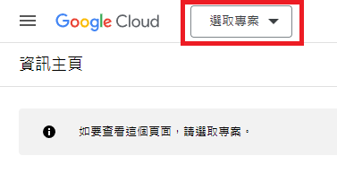
If you don't have a project, click [Create Project] to create a new one.
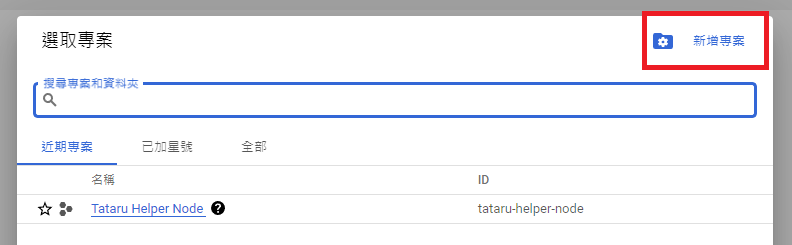
-
Go to the
Billing Account Management
page, click [Create Account] to set up a billing account, and enter your payment details.
Make sure to link it to the project you selected in the previous step.
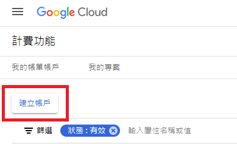
-
Go to the
API & Services Page
, click [Create Credentials], and then select [API Key] to create your key.
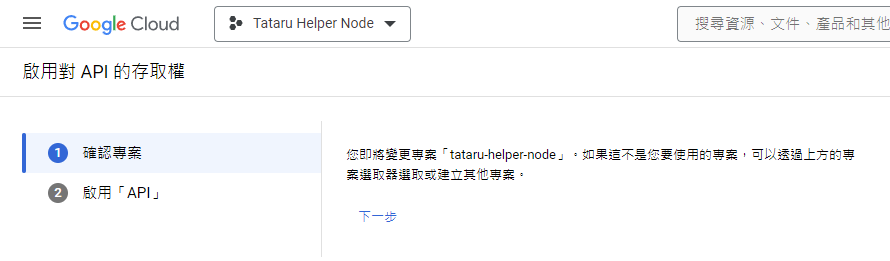
-
After creating the key, click on it. Under [API Restrictions], select [Restrict key], then search for and check [Cloud Vision API]. Click
[Save] when finished.
- Click the [Show Key] button on the right side of the newly created API key, then use the copy button next to the key to copy it.
-
Enter the Tataru Assistant [Settings], select [API Settings] from the top-left dropdown menu, and select [API Key] as the [Authentication
Method] for Google Vision.
- In the Google Vision [API Key] field, paste the key you just copied.
-
Select "Google Vision" in the capture window to start using it.
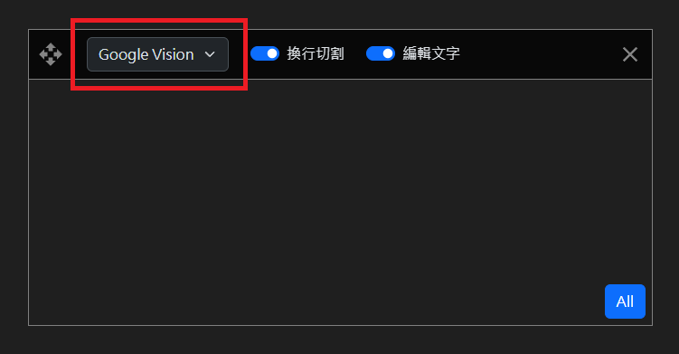
Using a JSON File
-
Go to the
Google Cloud Platform
to enable the services. (Same requirements as above).
-
Go to the
Dashboard
and select your project.
If you don't have a project, create one.
-
Go to the
Billing Account Management
page to create a billing account and link it to your project.
-
Go to the
Google Vision API page
, select your project, and enable Google Vision.
-
Go to
API/Service Details
, click [Create Credentials], then select [Service Account] to create one (you can fill in the details as you like).
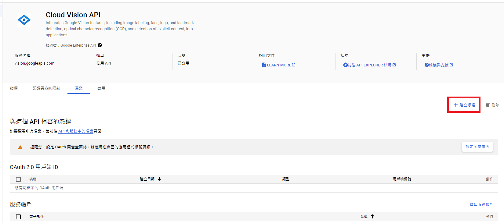
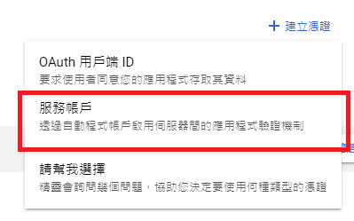
-
After creating it, click on the service account. Select the [Keys] tab, click [Add Key] > [Create new key] > [JSON]. After clicking create,
the certificate will be automatically downloaded to your computer.
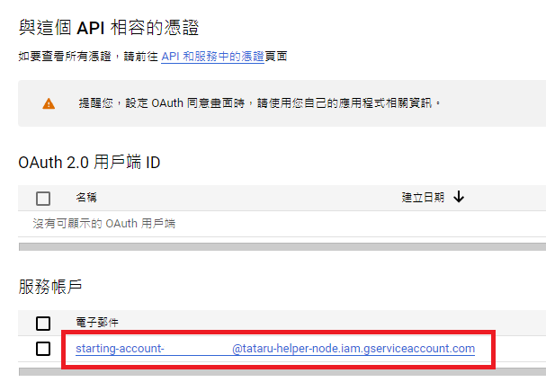
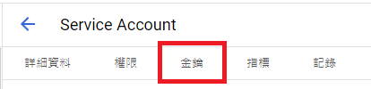
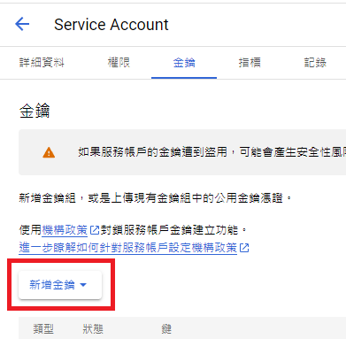
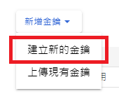
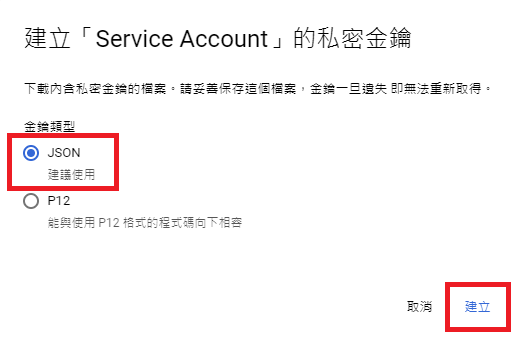
-
Enter the Tataru Assistant [Settings], select [API Settings] from the top-left dropdown menu, and select [JSON File] as the [Authentication
Method] for Google Vision.
-
Click the [Open Google Credentials File] button and select the JSON file you just downloaded.
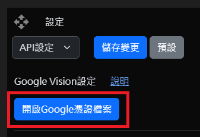
-
Select "Google Vision" in the capture window to start using it.
-
Because the credentials are tied to your billing account, please keep the file secure. To remove the credentials, simply go to your
service account's key page and delete it.